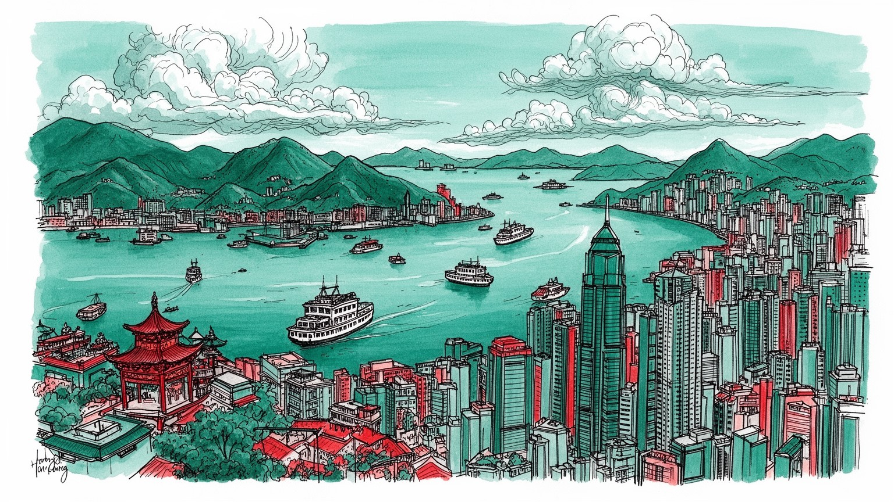
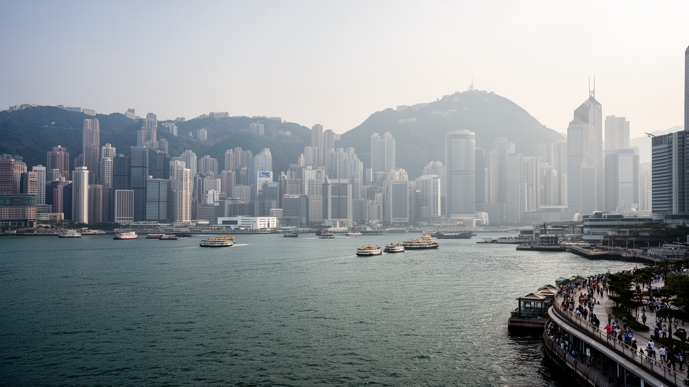
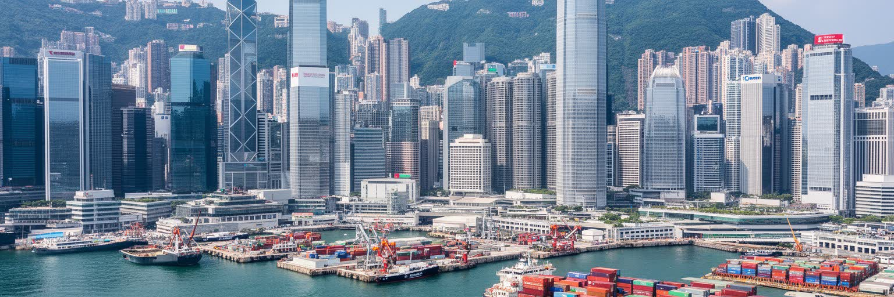
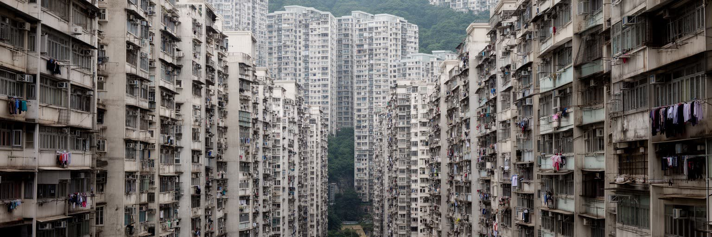
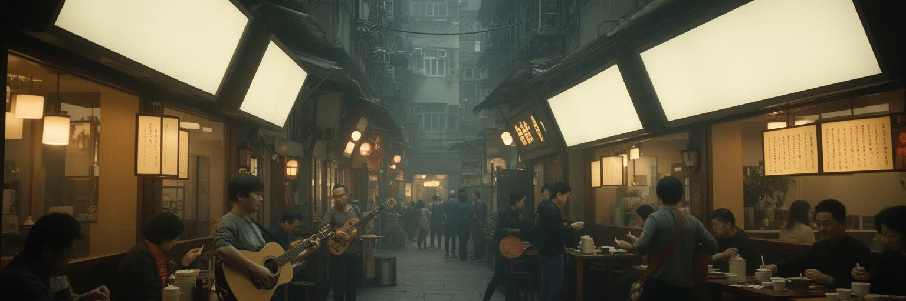
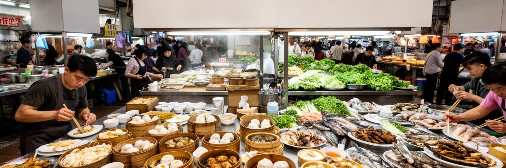
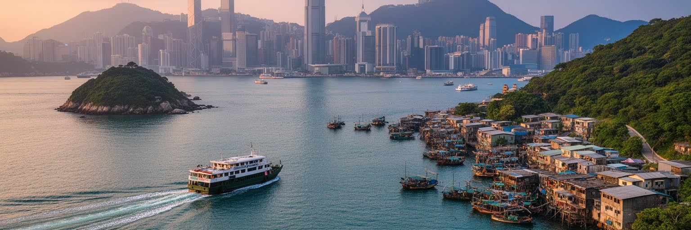
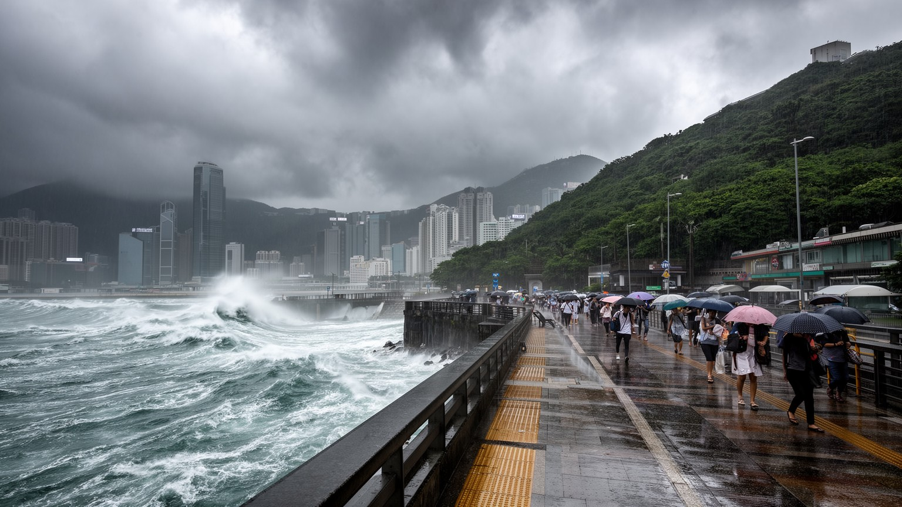

地政学
香港は中国の特別行政区であり、南シナ海、珠江デルタ、国際金融市場をつなぐ境界都市です。法制度、通関、移動、言語、報道の扱いが、港の自由度と国家統治の緊張を日常に近づける都市です。海空路も要所です。

🇭🇰 中国香港特別行政区 / アジア / World City Atlas
珠江デルタの入口で、金融、港湾、法制度、移民、映画、宗教、抗議の記憶、超高密度の住宅生活が重なる海峡都市です。
都市の骨格
香港は狭い平地と深い港を使い切り、金融街、住宅団地、寺院、市場、フェリー、空港、中国本土への回路を高密度に重ねています。

香港は中国の特別行政区であり、南シナ海、珠江デルタ、国際金融市場をつなぐ境界都市です。法制度、通関、移動、言語、報道の扱いが、港の自由度と国家統治の緊張を日常に近づける都市です。海空路も要所です。
金融、港湾、物流、観光、飲食、介護、家事労働が結びつきます。高収入の専門職と、長時間の店員、配達、清掃、住み込み労働が同じ街を支え、夜市や休日の広場も労働地図になります。小商いも粘ります。街角も働きます。
広東語映画、カントポップ、新聞、飲茶、寺院、教会、祖先祭祀、移民の祈りが重なります。植民地期と中国都市の記憶が混じり、言語、夜の音楽、信仰、祝祭が街の個性を守ります。媒体も多彩です。声も濃いです。
高層住宅、狭い部屋、地下鉄、ミニバス、市場、離島、夜景、山道が生活と観光を近づけます。住宅費、暑熱、高齢化、教育競争、買い物、子どもの遊びも同じ日常にあります。路地の音も濃いです。港風も届きます。

香港の都市構造は、ビクトリア・ハーバーと急な丘陵地を抜きに理解できません。平地が少ないため、金融街、埠頭、住宅、学校、市場、寺院、道路、鉄道は狭い帯状の土地に押し込まれ、背後の山は都市の境界であると同時に、朝の太極拳、週末のハイキング、子どもの遠足が向かう余暇の場所にもなります。港は植民地期から東アジア貿易の入口であり、コンテナ化と空港移転を経ても都市の視線を集めます。中環、湾仔、尖沙咀、油麻地、葵青、ランタオ島は、夜景だけでなくフェリー、トンネル、橋、倉庫、税関、ホテル、住宅の機能で結ばれます。海を挟んだ近さは開放感を生みますが、埋立と再開発は水辺の公共性をめぐる争点にもなります。港を横切る数分の船旅や一駅の移動で、家賃、方言、年齢層、観光客の密度、市場の匂いが変わるため、地形は社会の違いを細かく区切る線にもなっています。さらに坂、階段、歩道橋、地下鉄駅、フェリー桟橋をつないで歩くと、新聞を読む高齢者、制服の子ども、買い物袋を持つ家族、観光客のカメラが同じ斜面に重なります。香港の景観は遠景の摩天楼だけでなく、湿った風、潮の匂い、階段を上る息切れまで含む立体的な生活条件です。狭い土地では公園、運動場、学校の校庭まで貴重で、スポーツや放課後の遊びも地形に合わせて場所を探します。港風も日課になります。
香港の地政学は、港の位置だけでなく制度の位置から始まります。中国の一部でありながら、長く独自の法制度、通貨、税関、出入境管理、金融規制、教育制度、報道文化を持ち、国際企業や投資家はその予測可能性を重視してきました。返還後の一国二制度は香港を中国本土と世界市場の間に置く仕組みでしたが、治安法制、選挙制度、言論空間をめぐる変化は、住民の信頼や都市の国際的な評価に関わります。深圳との境界は通勤、買い物、物流、家族移動を広げる一方、通関、通信、支払い、ニュースの読み方に制度差を残します。裁判所、大学、新聞社、警察、銀行、証券取引所は抽象的な制度ではなく、都市生活の中で機能する装置です。抗議活動の記憶は、広場、歩道橋、大学、地下鉄駅、裁判所周辺に残ります。企業の登記、学校選び、海外留学、家族の移住相談、メディアの表現の幅は、政治制度の変化を家庭の会話へ引き寄せます。どの新聞を読み、どの言語で授業を受け、子どもをどこで育てるかという選択にも、境界の感覚は入り込みます。国際学校、地元校、大学、補習教育は将来の移動可能性を測る場でもあります。買い物や通院で越境する家族にも、制度は身近です。週末のショッピングや医療相談にも、境界を越える判断が混じります。都市の境界は地図の線ではなく、信頼、権利、将来設計を測る日常の尺度になっています。

香港の経済は、資本、物流、法律、保険、会計、海運、観光、専門サービスを束ねる仲介都市として発展しました。中環の高層ビルには銀行、証券、資産運用、法律事務所、会計事務所が集まり、港湾と空港は中国本土、東南アジア、欧米市場をつなぎます。香港ドルの制度、英米法に近い商事実務、低い税率、英語、広東語、普通話を使い分ける人材は競争力を支えてきました。ですが金融の輝きは、家賃、所得格差、若者の就職、零細商店の退出をめぐる緊張も強めます。株式上場や不動産投資で大きな利益が動く一方、飲食、清掃、警備、配送、ホテル、介護、家事労働、夜市の露店、路上販売の賃金は生活費に追いつきにくいです。葵青のコンテナターミナル、空港貨物、越境トラック、倉庫、船舶管理は都市の背骨です。家族経営の店、ホテルの裏方、会計士の長時間勤務、港のシフト作業、配達員のスマートフォンの通知は、同じ成長を別々の身体感覚で受け止めます。昼の金融街と深夜の茶餐廳、朝の市場、週末の買い物客は一つの経済循環です。銀行員がジムへ急ぎ、店員が閉店後に夜食を取り、介護職が早朝のバスに乗る時間差も都市の労働です。街角の修理店や小さな新聞売り場も、巨大な金融都市の足元を支えます。家賃が上がるほど、その足元の仕事は細ります。数字の大きさより、誰が都市に残れるかが経済の持続性を決めます。

香港の暮らしを最も強く規定するのは住宅です。海と山に挟まれた土地、政府の土地制度、不動産投資、人口集中が重なり、住宅価格と家賃は世界でも高い水準にあります。高層マンションや公営住宅団地は都市の象徴ですが、その内部には広さ、眺望、駅距離、管理状態、所得、家族構成による大きな差があります。狭小住宅、劏房と呼ばれる細分化された部屋、古いビルの安全、待機期間の長い公営住宅は、豊かな金融都市の足元にある重い生活負担です。子どもは食卓を学習机にし、受験塾やスポーツ教室へ急ぎます。高齢者は階段、暑さ、医療への距離、買い物袋の重さに苦しみ、移住労働者は雇用主宅で私的な空間を持ちにくいです。再開発は衛生を改善する一方、古い市場、安い店、顔なじみの惣菜店を押し出します。高密度は地下鉄や商業の便利さを生みますが、住居の狭さは在宅勤務、介護、休息の質を下げます。公園や体育館、図書館、海辺のベンチは、狭い家を補う共有の居間にもなります。買い物袋の音、隣室のテレビ、エレベーター待ちの会話が、住宅の近さを毎日知らせます。週末の運動場や図書館は、子どもと高齢者が息をつける数少ない場所です。狭い部屋では食事、勉強、介護、睡眠がすぐ隣り合います。住宅を読むことは、家族の距離、教育競争、高齢化、移民、未来への希望を読むことに直結しています。
香港の移動は、MTR、二階建てバス、ミニバス、トラム、フェリー、タクシー、歩道橋、エスカレーター、空港鉄道、越境鉄道が細かく組み合わさっています。狭い土地に人と仕事が集中するため、交通の効率は生活の質を直接左右します。MTRは通勤、通学、買い物、観光を支える骨格で、駅の周辺には住宅、商業施設、学校、オフィス、補習校が高密度に配置されます。フェリーは港の景観を体験させる交通であると同時に、離島の住民、釣り客、週末の家族連れにとって日常の足です。中環の長いエスカレーターや斜面の階段は、雨や暑さの中で歩く負担を変えます。深圳や広州へ向かう高速鉄道、橋、口岸は香港を大湾区の一部として結び直しますが、通関、言語、通貨、データの境界が残ります。競馬場やスタジアムへ向かう夜の混雑、深夜勤務者の終電、子ども連れや高齢者の乗換距離を見れば、便利な交通網にも時間帯と身体による偏りがあります。ミニバスの急なブレーキ、トラムの鐘、改札の音、雨の日の傘の列は、移動を感覚として記憶させます。駅前の市場や商店街は帰宅途中の買い物を受け止め、交通と路上経済を結びます。観戦帰りの声や夜食の列も交通の時間を変えます。早朝の通学列と深夜の帰宅列が、同じ駅に別の表情を与えます。駅の近さは買い物の選択肢と家賃を同時に変える階層の指標です。

香港文化の中心には、広東語の響き、映画、カントポップ、新聞、漫画、テレビ、茶餐廳、街市、看板、冗談の速さがあります。香港ノワール、コメディ、恋愛映画、アイドル音楽、深夜のライブハウスやバーは、狭い路地、階段、屋上、フェリー、ネオンの記憶を世界へ広げました。英語はビジネスと教育の重要な言語であり、普通話は中国本土との関係を深めますが、広東語は家庭、街角、地域のユーモア、ニュースを読む感情を支えます。新聞、ラジオ、SNS、オンラインメディアは制度変化の中で表現の幅を慎重に測り、大学や書店、小劇場、独立音楽の場も言葉の温度を保ちます。観光客にとって香港文化は飲茶や夜景として入りやすいですが、住民にとっては移民家族の記憶、教育競争、報道の自由、地元商店の消滅、世代間の価値観の違いとも結びつきます。子どもは英語、広東語、普通話の間で学び、高齢者はラジオや新聞の声に街の変化を聞き取ります。看板の字体、学校で使う言語、店の注文の速さ、葬儀の挨拶、家族の冗談は、制度が変わっても残る都市の感触です。深夜の音楽、映画館の暗さ、屋台の呼び声は、文化を身体で覚えさせます。動画配信や掲示板の言い回しも、街の気分を素早く運びます。若い演奏者の小さな舞台も記憶を更新します。文化の継承は博物館だけでなく、毎日の話し方と夜の音の中で保たれます。
香港の宗教生活は、道教、仏教、祖先祭祀、民間信仰、キリスト教、イスラム教、ヒンドゥー教、シク教が港湾都市らしく重なっています。黄大仙祠や文武廟、天后廟は観光名所である前に、試験、商売、航海、健康、家族の安全を祈る場所であり、線香、供物、占い、祭礼が都市の時間を区切ります。海の神である天后への信仰は漁村と港の記憶を残し、高層ビルの足元に小さな祠が残ることで、急速な更新に別の層を与えます。キリスト教会や学校、病院、福祉団体は社会サービスにも関わり、南アジア系や東南アジア系の住民はモスクや寺院、休日の集まりを通じて共同体を保ちます。清明節、中元節、旧正月、ドラゴンボートの祝祭は、家族、死者、海、競漕の熱気を都市へ持ち込みます。線香の煙、太鼓、供物の色、廟前の屋台、休日の歩道橋に集まる移住労働者の祈りと交流は、公共空間で居場所を確かめる行為です。子どもの合格祈願、高齢者の墓参、商店主の開市の祈りは、忙しい都市にゆっくりした暦を差し込みます。学校や病院を通じた宗教団体の働きは、信仰を福祉と教育にも結びます。祝祭の日には市場の品ぞろえや家族の外食も変わり、信仰は買い物の景色にも現れます。爆竹の記憶や太鼓の響きも、街の暦を知らせます。宗教は教育、福祉、移民支援、地域の結束にも深く関わり、不確かな将来に意味を与える場所を保っています。

香港の食は、広東料理の洗練と労働都市の速さを同時に持ちます。飲茶の点心、焼味、粥、麺、海鮮、茶餐廳のミルクティーや菠蘿包、屋台風の小食、街市の鮮魚や野菜は、観光の楽しみである前に住民の生活リズムを支えます。朝の茶楼では高齢者が新聞を読み、昼には会社員が短い休憩で麺をすすり、放課後の子どもはエッグタルトや魚蛋を手に塾へ向かいます。夜には家族や友人が円卓を囲み、旺角や深水埗の市場では湿った床、氷、湯気、香辛料、値段を呼ぶ声が買い物の感覚を作ります。食文化は上海、潮州、客家、東南アジア、南アジア、西洋料理も重ねます。ですが厨房、配膳、皿洗い、仕入れ、清掃、配達は長時間で、家賃の上昇は古い茶餐廳や市場の存続を難しくします。衛生的な商業施設への移転は便利さを増す一方、路地の匂い、店主との会話、地域の価格感覚を薄めることもあります。食を読むことは、誰が早朝に仕込み、誰が深夜に片付け、どの家族が外食に頼り、どの店が再開発で消えるのかを見ることです。狭い台所を補う外食文化は家族の時間を外へ開き、食堂の相席は、都市の短い共同性を生みます。買い物客は魚を選び、高齢者は野菜の値を比べ、店員は声で常連を呼び止めます。朝粥の静けさも残ります。甘いミルクティー、金属皿の音、蒸籠の湯気は、香港の速度を舌と耳に残します。

香港観光は、ビクトリア・ピークからの夜景、尖沙咀の水辺、中環の高層街、女人街、寺院、飲茶、映画の記憶だけで終わらありません。ランタオ島、長洲、南丫島、坪洲、新界の村落、山道、海岸を歩くと、金融都市とは違う香港が見えます。離島ではフェリーの時間が生活を決め、漁村、廟、海鮮店、ハイキング客、週末の家族連れがゆるやかに混じります。中心部では大型モールの高級店、スニーカー店、電器店、露店、市場が近く、買い物は観光と日常の両方です。夜はバー、ライブ、競馬、サッカー観戦、港辺の散歩が混ざり、ネオンが減った街にも音と人の流れが残ります。観光の成功は交通、多言語案内、治安、清潔さ、食の多様性に支えられますが、混雑、家賃、土産物化、自然環境への負荷も生みます。博物館や歴史散策は、植民地、戦争、移民、抗議、工業化の記憶を伝える入口です。短い滞在でも、朝の市場、昼の寺院、夕方の山道、夜の水辺をつなぐと、旅の動線が住民の通勤や買い物の線と重なっていることが分かります。子ども連れは遊具や水族館へ向かい、高齢者は涼しいモールで休みます。土産物を選ぶ手つきも、地元の夕食の買い物と同じ路地で起こります。港の湿った風と店先の光も、旅の記憶を濃くします。訪問者の便利さと住民の静けさを両立できるかが、観光の質を左右します。

香港は亜熱帯の高温多湿な都市で、台風、豪雨、高潮、土砂災害、猛暑、感染症のリスクを抱えます。海に近く斜面が多い地形は美しい景観を生みますが、強い雨が降れば斜面、地下道、低地、埋立地、港湾施設が同時に試されます。過去の土砂災害を経て斜面管理や排水設備は発達しましたが、気候変動による極端な雨と海面上昇は従来の設計を超える可能性を高めています。高層住宅では台風時の窓、停電、エレベーター、給水、避難情報が生活の安全に直結します。猛暑は屋外労働者、清掃員、警備員、配達員、高齢者、狭い住居で暮らす人、屋外で遊ぶ子どもに重くのしかかり、冷房費や公共空間の不足は健康格差を広げます。地下鉄や商業施設は涼しい避難空間にもなりますが、消費を前提にした場所へ入りにくい人もいます。警報が出る日には学校、港、空港、建設現場、飲食店、競馬や屋外イベントの判断が一斉に変わり、都市の経済と家族の予定が揺れます。市場の魚箱、路上の屋台、坂道の排水、古いビルの階段も雨と暑さの影響を受けます。湿った空気、冷房の強い店内、濡れた舗道の照り返しは、季節を身体に刻みます。高齢者の見守りや子どもの登下校判断も、防災の一部です。防災はインフラだけでなく、多言語の警報、近隣関係、涼める公共空間、働く人を休ませる制度を含む生活の仕組みです。
香港は、自由港、金融センター、映画都市、移民都市、特別行政区、高密度の住宅都市という複数の顔を同じ地図に重ねています。中環の銀行、湾仔の展示場、尖沙咀のホテル、旺角の市場、葵青のコンテナ港、新界のニュータウン、離島のフェリー、大学の講義室、寺院の線香、家事労働者が集まる休日の広場は、別々の都市ではなく一つの生活圏の層です。香港を経済だけで見ると、金融と物流の強さは分かっても、住宅の狭さ、言語の感情、政治的不安、信仰、食、音楽、移民労働、気候リスクを見落とします。逆に政治だけで見ると、通勤、家族の食卓、子どもの塾、高齢者の市場通い、山道の余暇、商店の粘り強さが見えにくくなります。制度の変化はメディア、学校、移住判断に影響し、土地の狭さは家族形成や介護に影響し、港の開放性は宗教、祝祭、買い物、夜の文化を育ててきました。港を渡る風景、路地の食堂、斜面の住宅、境界の手続き、競馬場の歓声、街市の匂いまで合わせて見ると、香港は現代アジアの希望と緊張を凝縮した都市として立ち上がります。教育、老い、子どもの遊び、夜の音楽を同じ地図に置くと、都市の厚みが見えます。買い物袋、新聞、線香、フェリーの音も同じ読解の手がかりです。未来は国際金融の地位だけでなく、若者が住み続けられるか、移民労働者が尊厳を持てるか、文化の言葉が日常に残るかにもかかっています。